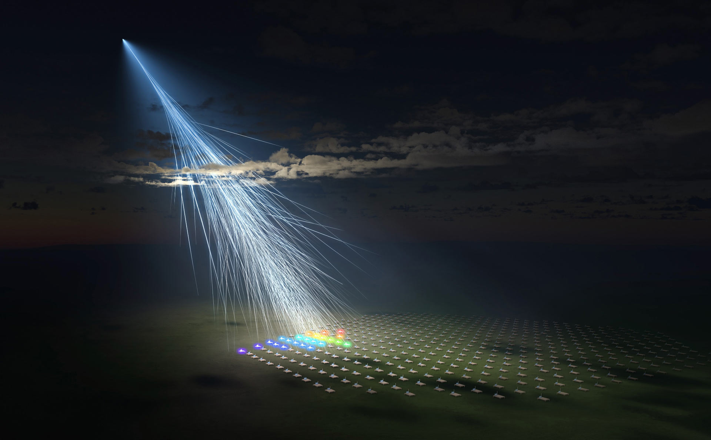

GZK Cutoff and Ultra-High-Energy Cosmic Rays
Neutrino and Gamma Astronomy Seminar
Ben Carew, 23-05-24
Cosmic Rays
- 89% protons, 10% helium nuclei, 1% heavier nuclei
- ~1 muon per second per human head
- Energy ranges from 1 GeV to $10^8$ TeV
Ultra High Energy Cosmic Rays (UHECRs)
- Flux falls off with energy, from $10^5/m^2/s$ to $<1 /km^2/$century
- Produce showers of 10 billion particles, spread over $20km^2$
- Sources:
- Remnant supernovae, e.g. Crab Nebula
- supermassive black holes
- high-energy astrophysical phenomena
The GZK Cut-Off
$p + \gamma \rightarrow \Delta^+ \rightarrow \rho^+ + \pi^0$ or $n + \pi^+$
Minimum energy: \( p^\mu_p + p^\mu_\gamma = p^\mu_\Delta \)
\( m_p^2 + 2p_p\cdot p_\gamma + 0 = m_\Delta^2 \)
\( p_p\cdot p_\gamma = |p_p||p_\gamma|\cos{\theta} \approx E_p \cdot E_\gamma \cos{\theta} \)
\( E_p = \frac{m_\Delta^2 - m_p^2}{2E_\gamma(1-\cos{\theta})} = 2.4 \times 10^{20} \) eV
The GZK Cut-Off
- Including CMB thermal distribution and \( \Delta \) resonance makes it slightly lower, \( E_p < 5 \times 10^{19} \) eV \( \approx 8 \)J
- Very high energy for proton, \( v = 0.9999999999999999999998c \) (21 9s)
- GZK cutoff experimentally observed in 2008 (controversial, unconfirmed?)
Experimental Verification
The Telescope Array Experiment
Key Measurements
27th May, 2021

What We Know
- Nucleon collision (if proton) was ~700 TeV
- Machine learning excludes photon as primary particle at 99.986% confidence
- Bright moonlight, fluorescence stations turned off $\rightarrow$ can't distinguish proton or nucleus
- Detector simulation $\rightarrow$ 29 EeV energy resolution
- No lightning activity recorded in the vicinity
Previous UHECR Events
| Year | Detector | Energy |
|---|---|---|
| 1991 | Fluorescence | 320 EeV |
| 1993 | Fluorescence & scintillation | 213 EeV |
| 2001 | Fluorescence & scintillation | 280 EeV |
| 2021 | Fluorescence & scintillation | 309 EeV |
Possible Trajectories
Possible Sources
- Possible galactic CR source only 2.5° away, but ~600Mpc -> too far away
- Max propagation for 244 EeV is ~30 Mpc for all primary possibilities
- Distance to nearest UHECR source:
- If iron, D = 10.3+5.3-3.0 Mpc
- If proton, D = 27.0+3.8-3.0 Mpc
Possible Explanations?
- Observational error, misinterpreting data
- Local sources within GZK horizon (but where?)
- CRs are heavier nuclei than protons, GZK limit is higher
- Incorrect modelling of galactic magnetic field (GMF)
- A high-energy neutrino produced a proton locally by interaction with anti-neutrino
- Loop quantum gravity theory can predict higher GZK energy cutoff
Summary
- The GZK limit should be a strict upper limit on CR energies
- Several UHECRs have been observed which violate this limit
- Opportunity to learn more about GMF, particle and BSM physics